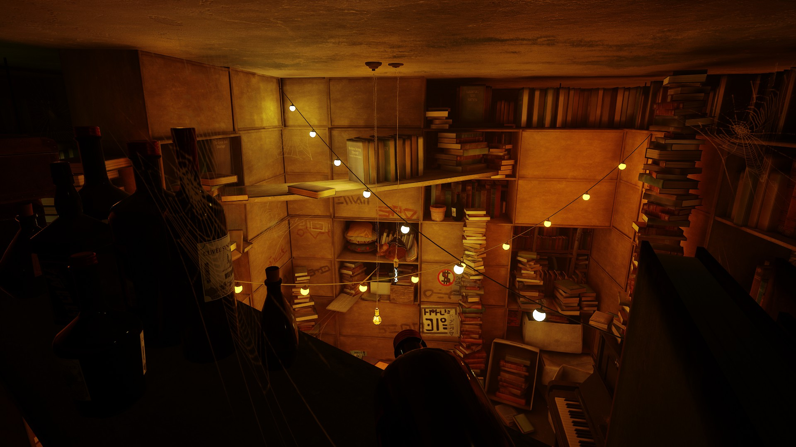
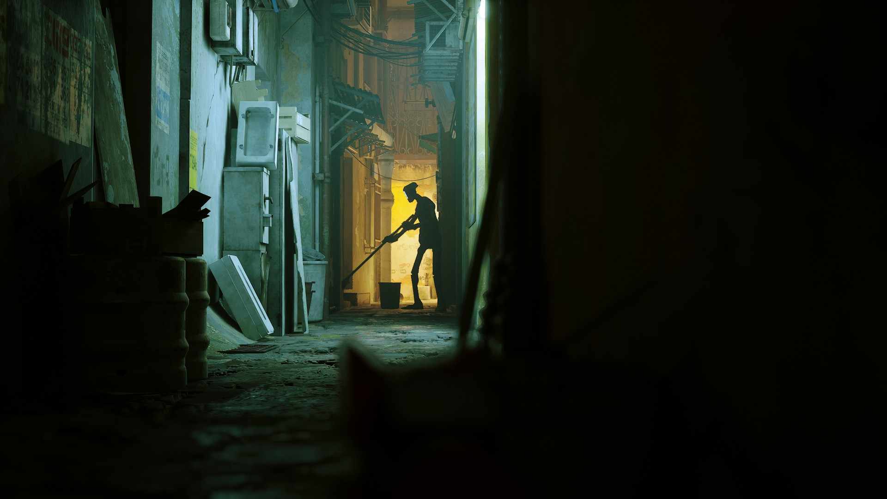

What Stray is
Stray is an adventure game where you play as a small stray cat.
The game takes place in a beautiful futuristic city full of robots and mysteries.
You can explore the city, solve puzzles, and help the characters you meet.
Story and World
- The game starts with your cat falling into a hidden underground city full of robots, machines, and mutant bacteria.
- You meet a drone companion called B-12 that helps you communicate, hack terminals, and understand the world around you.
- The city looks abandoned but is beautifully designed with neon lights and secrets everywhere.
Gameplay
Here you can climb, jump, and explore like a real cat.
Also you can interact with robots and solve light puzzles to open new paths.
You should avoid dangerous creatures called Zurks and security drones.
There are cute cat actions, like meowing and rubbing objects, which make the game funny.
Why do i like stray
I really like playing Stray because it is calm and relaxing and cute.
The atmosphere is amazing, and the city looks very detailed and it looks like Japanese streets.
The story is emotional, and it makes the game special for me.

Download game
Here you can download the game on Steam:
Click the link!